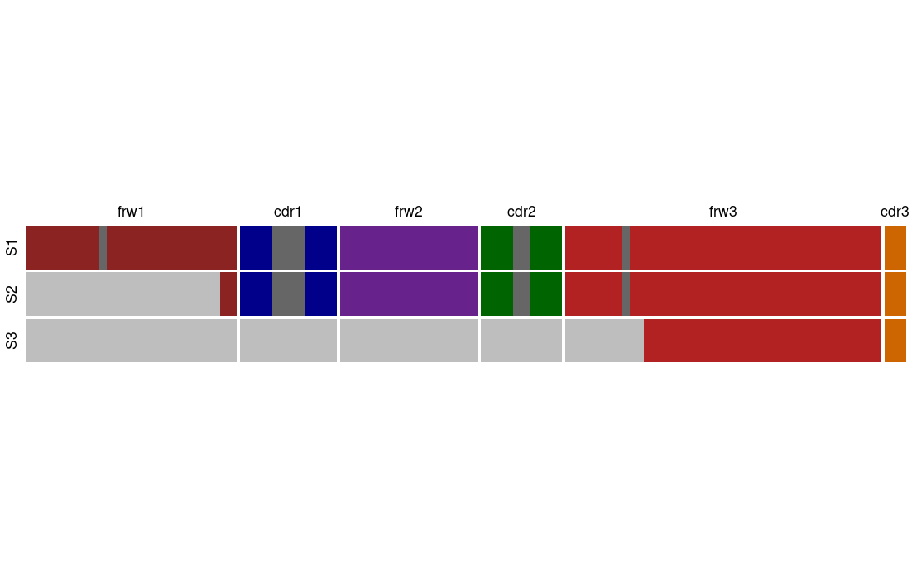
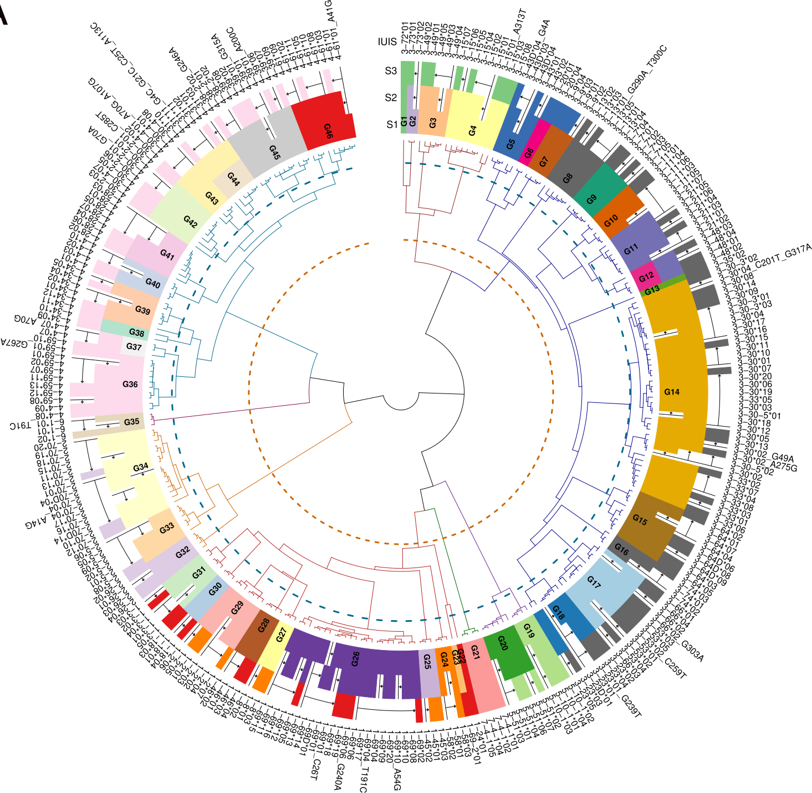

Allele Similarity Cluster (ASC)
The term Allele similarity clusters (ASC), defines alleles that have a degree of germline proximity. The proximity is defined as the Levenshtein distance between the coding region of the alleles’ germline sequences. A distance matrix of all alleles’ Levenshtein distance is constructed and the hierarchical tree is calculated. The tree leaves are then clustered by 95% similarity which creates the alleles clusters.
This IGH reference book uses the current IMGT IGHV reference available. We selected functional alleles and trimmed the sequences up to position 318. We discarded alleles which are truncated in their 5’ region as well as those that are less then 318 nucleotides.
Library amplicon length
Even though, we wish that all repertoires data available will cover the entire V region this is not always the case. Hence, we adapted our protocols to fit partial V coverage libraries. For the beginning we chose two library amplicon length, BIOMED-2 primers and Adaptive region coverage. The table below summaries the naming for each of the amplicon lengths and see Figure 1 for coverage illustration:
| Library amplicon length | Coverage | Similar known protocol |
|---|---|---|
| S1 | Full length - 1 to 318 (IMGT numbering) | 5’ Race |
| S2 | Starting within the framework 1 region | BIOMED-2 |
| S3 | End of the V region | Adaptive |

Genes to allele clusters
To illustrate the relation between the International Union of Immunological Societies (IUIS) and IMGT (Giudicelli and Lefranc 1999) named alleles to the clustered allele clusters we created the figure Figure 2.

Alleles’ group summary
| Length | Family | Group | Alleles |
|---|---|---|---|
| IUIS/IMGT | 7 | 54 | 286 |
| S1 | 8 | 47 | 279 |
| S2 | 44 | 247 | |
| S3 | 11 | 130 |
References